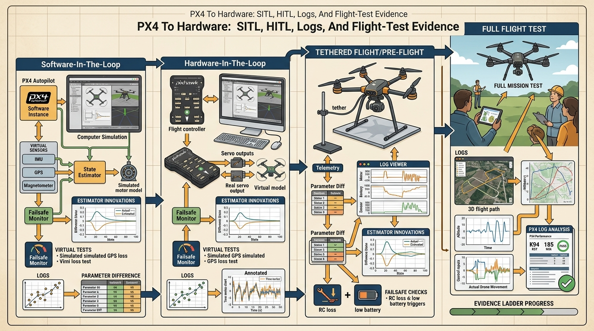

"A drone is not airworthy because it flew once; it is airworthy because the same fault was interrogated in SITL, in HITL, and in the logs."
A Systems-Minded Embodied AI Agent
A delivery drone completed 200 SITL missions without a single fault, then crashed on its third real flight because a vibration-induced EKF divergence was never tested in hardware. The gap between simulation confidence and physical reality is the most dangerous moment in aerial embodied AI deployment. As autonomous drones move from research labs into warehouses, farms, and emergency response, the ability to build a credible evidence ladder, SITL to HITL to guarded flight to post-flight log review, separates systems that scale safely from ones that fail expensively. You will learn to construct and read that ladder for PX4-based stacks.

This section assumes you can formulate trajectory commands and understand GPS-denied state estimation from section 47.7. The evidence-ladder approach introduced here is extended in section 53.4, which covers safety monitors and fallback trigger design in full-system deployments, and in section 53.6, which applies the same promotion-artifact discipline to robustness evaluation across sensor-degraded conditions.
Students often assume that a high number of clean SITL runs proves a drone stack is ready for hardware, and that HITL is just a formality to confirm what simulation already showed. This is wrong in the embodied AI context because SITL and HITL test entirely different failure surfaces: SITL exposes software logic errors in a physics-simplified loop, while HITL exposes real flight-controller timing, interrupt latency, and estimator behavior that cannot be emulated. A stack with 1000 clean SITL missions can still fail on its first HITL run due to a 12 ms timing slip the simulator never introduced. The correct mental model is that each stage in the promotion ladder adds a new class of physical evidence, not a higher confidence score on the same evidence.
Deployment Is A Sequence Of Claims
A PX4-based drone stack usually makes at least six distinct claims. First, the mission logic produces commands in the right frame and units. Second, the estimator keeps a believable state in the intended operating domain. Third, the low-level controller can track the commanded motion without persistent saturation. Fourth, the communication path between companion computer and flight controller meets the timing budget. Fifth, the safety monitor triggers the intended fallback. Sixth, the logs and replay tools are rich enough to explain a failure after the fact.
Those claims should be promoted stage by stage. SITL is where you catch frame mistakes, route logic bugs, and bad assumptions about the controller interface. HITL is where timing, estimator plumbing, and real flight-controller behavior become visible. Tethered or guarded hover tests are where vibration, battery sag, magnetic disturbance, prop wash, and sensor placement begin to rewrite the story. To see what skipping a stage costs: one documented industrial case ran 847 clean SITL missions, skipped HITL entirely, and lost the vehicle on flight 2 when a 12 ms timing slip caused the estimator to apply a stale correction at exactly the wrong moment; running HITL for two days would have caught it, while recovering the airframe and repeating certification took six weeks. This is what makes the promotion ladder matter: two days of HITL vs. six weeks of recovery.
Do not promote a drone stack to the next stage because the previous stage "looked good." Promote it only when the previous stage produced the exact evidence artifact that the next stage would need if it went wrong.
Flight-Readiness Mathematics
The most useful equations in deployment work are not fancy control laws. They are the diagnostics that tell you whether the stack still deserves trust. Two examples appear in almost every PX4 debugging session:
$$r_k = z_k - h(\hat x_k^-), \qquad a_y = v^2 \kappa.$$
The innovation residual $r_k$ says whether the estimator's belief and the incoming sensor measurement still agree. The lateral acceleration relation $a_y = v^2 \kappa$ says whether a planned turn is physically credible for the airframe and speed envelope. When a VIO-assisted mission drifts, or a trajectory asks for more curvature than the aircraft can safely track, these simple quantities fail before the mission-level score fails.
The innovation residual matters in embodied AI because a drone cannot pause mid-flight to ask whether its position belief is correct. When $r_k$ grows large, the EKF has already begun applying corrections to a state that no longer matches physical reality: the controller then tracks a ghost trajectory, and the airframe responds to commands that assume a position it does not occupy. In cluttered indoor or GPS-denied environments, this divergence causes collisions within seconds, not minutes.
Mechanically, the EKF predicts the next measurement using the current state estimate and the sensor model $h(\hat x_k^-)$. The residual is the signed gap between that prediction and the actual sensor reading $z_k$. The filter then weights this gap by the Kalman gain to correct the state. A persistently large residual indicates that the prediction model, the delay compensation, or the sensor calibration is wrong, and the filter is amplifying rather than damping the error.
A practical flight-readiness gate can therefore be written as a vector of measurable conditions:
$$g = [e_{\mathrm{track}}, r_{\mathrm{ekf}}, s_{\mathrm{act}}, \ell_{\mathrm{latency}}, f_{\mathrm{failsafe}}].$$
The gate passes only if tracking error stays bounded, estimator residuals stay healthy, actuator saturation stays rare, link latency remains inside the offboard budget, and failsafes either do not trigger or trigger exactly as designed during test scenarios.
- Freeze the mission card: frames, units, setpoint interface, geofence, battery reserve, and emergency behaviors.
- Run SITL until route logic, offboard mode transitions, and frame conventions are clean under scripted perturbations.
- Move to HITL and measure command latency, estimator update timing, and mode transitions on real hardware.
- Run guarded hover or a tethered test and inspect vibration, innovation residuals, thrust saturation, and failsafe triggers.
- Expand the envelope gradually across wind, payload, speed, and route complexity, saving one replay artifact per failure class.
Practical Stack And What Each Tool Proves
The practical tool stack for this section is: PX4, QGroundControl, MAVLink, MAVSDK, ROS 2 uXRCE-DDS, Flight Review or Data Comets, Gazebo. The point is not to name a fashionable stack. The point is to assign each tool a job in the evidence ladder: PX4 exposes controller modes and failsafes, QGroundControl exposes parameters and health checks, MAVLink and MAVSDK expose command and telemetry contracts, ROS 2 exposes companion-computer timing, and the log-analysis tools expose what the vehicle actually believed and did.
| Stage | Main question | Evidence to save |
|---|---|---|
| SITL | Are frames, commands, and mission logic correct? | Mission script, simulator seed, route outcomes, and offboard mode traces. |
| HITL | Does the real flight controller preserve timing and mode behavior? | Mode transitions, command latency, estimator health, and parameter snapshot. |
| Guarded hover | Can the vehicle remain stable with the real airframe, sensors, and vibration? | Innovation residuals, vibration metrics, actuator saturation, and failsafe results. |
| Envelope expansion | Which wind, payload, and route conditions remain inside the safe operating envelope? | Per-flight envelopes, disturbance labels, recovery traces, and blocked conditions. |
| Post-flight review | Can the team explain every anomaly and turn it into a reusable test? | Annotated log review, replay case, mitigation note, and promotion decision. |
Stress the system with frame-sign errors, estimator resets, vibration, magnetometer interference, motor imbalance, battery sag, payload shift, wind gusts, stale maps, and companion-computer latency. These are not rare corner cases. They are the normal reasons a beautiful simulation result becomes an unsafe aircraft.
A warehouse-inspection drone may pass SITL and HITL, then fail its first guarded hover because VIO timestamps lag just enough to produce innovation spikes during yaw motion. The right response is not "the model failed." The right response is to save the log, pin the failure to timing plus estimator fusion, and convert it into a permanent gate before the next flight.
When VIO innovation spikes appear only during fast yaw or translational acceleration, the root cause is almost always incorrect delay compensation rather than a bad pipeline. Set EKF2_EV_DELAY in PX4 to the measured end-to-end latency of your visual-odometry pipeline (camera exposure midpoint to the moment the pose message is published on the companion computer), then verify by watching the estimator_innovation_test_ratios topic in Flight Review: healthy fusion keeps all ratios below 1.0 across the full maneuver envelope. A common mistake is leaving EKF2_EV_DELAY at its default of 175 ms when the real pipeline latency is 60 to 80 ms, which causes the estimator to apply corrections to a stale state and amplifies rather than damps the spikes.
Code And Evidence
The implementation below illustrates how to store one promotion decision as a compact artifact. Code Fragment 1 is intentionally small so that the structure, not the syntax, stays memorable.
# Build one promotion record for a PX4 hardware-readiness gate.
# The same schema should survive SITL, HITL, and guarded-flight stages.
from dataclasses import dataclass, asdict
@dataclass
class FlightGate:
stage: str
mean_tracking_error_m: float
innovation_ratio: float
command_latency_ms: int
actuator_saturation_pct: float
failsafe: str
decision: str
def as_row(self) -> dict[str, object]:
return asdict(self)
gate = FlightGate(
stage="guarded_hover",
mean_tracking_error_m=0.18,
innovation_ratio=0.74,
command_latency_ms=32,
actuator_saturation_pct=7.5,
failsafe="not_triggered",
decision="promote_to_low_speed_route_test",
)
print(gate.as_row())Expected output: the printed dictionary should make it possible to explain the promotion decision without opening another notebook or guessing which stage produced the numbers. If the record lacks stage name, estimator health, latency, or the explicit decision, it is too weak to support real hardware progression.
Use PX4 for controller modes and failsafes, QGroundControl for parameter management, MAVSDK for scripted missions, ROS 2 uXRCE-DDS for companion-computer integration, and Flight Review or Data Comets for log analysis. The point of the shortcut is not fewer lines of code, it is fewer silent assumptions between the planner and the propellers.
Recipe For Builders
- Freeze the mission manifest before hardware testing: airframe, payload, sensor suite, command interface, reserve battery, geofence, and abort conditions.
- Run SITL with the same route and metric script that you will use later on real hardware.
- Move to HITL only after command frames, mode transitions, and estimator sources are all explicit and reproducible.
- Use guarded hover and low-speed envelope expansion to test vibration, innovation residuals, saturation, and failsafes under controlled disturbances.
- Turn every anomaly into a replay case, then decide promotion or rollback from the evidence artifact rather than from team confidence.
A drone stack is not "almost ready" when the route looks good. It is ready only when the next failure already has a log format, a replay path, and a blocked-promotion rule waiting for it.
Can you state which one artifact would convince you to promote a PX4 mission from guarded hover to route flight, and which one artifact would force a rollback?
Aerial autonomy research is deploying transformer-based trajectory planners (such as those in the Open X-Embodiment collection and the Agile Flight dataset from Kaufmann et al. 2023) directly onto PX4-class airframes, but the hard unsolved problem is bridging these learned policies across the sim-to-real gap at the estimator level. A promising direction combines domain-randomized Gazebo training with online EKF2 residual monitoring: the learned policy's action distribution is gated by the estimator_innovation_test_ratios health signal, so a spike above 1.0 during a fast yaw maneuver suppresses the policy output and triggers a PX4 Position Hold fallback rather than propagating a corrupted command. The frontier contribution is not a better policy in isolation; it is a promotion-time evidence loop that audits the policy under the same vibration profiles, EKF2_EV_DELAY settings, and actuator saturation budgets that real hardware encounters at 5 to 15 m/s.
PX4 To Hardware: SITL, HITL, Logs, And Flight-Test Evidence earns its place in the book because it teaches the missing middle between a simulation result and a safe aircraft. That middle is where embodied AI becomes engineering.
Create a flight-readiness package for one inspection mission: SITL result, HITL checklist, parameter diff, estimator-health plot, one failsafe test, and one replayable anomaly. End with a written promotion or rollback decision that cites the evidence directly.
Section References
PX4 Autopilot user guide. https://docs.px4.io/main/en/index
Official PX4 documentation for flight modes, simulation, configuration, estimators, and hardware bring-up.
PX4 companion-computer and ROS 2 guides. https://docs.px4.io/main/en/companion_computer/
Current official reference for companion-computer integration, ROS 2 routing, and offboard interfaces.
PX4 visual inertial odometry. https://docs.px4.io/main/en/computer_vision/visual_inertial_odometry
Official PX4 reference for GPS-denied VIO pipelines and estimator integration.
PX4 flight log analysis. https://docs.px4.io/main/en/log/flight_log_analysis
Official PX4 documentation for Flight Review and related log-analysis workflows.
MAVSDK. https://mavsdk.mavlink.io/main/en/
Programmatic mission control, telemetry, and system-state access for PX4-class vehicles.
EASA Specific Operations Risk Assessment, SORA. https://www.easa.europa.eu/en/domains/drones-air-mobility/operating-drone/specific-category-civil-drones/specific-operations-risk-assessment-sora
Operational risk framework that helps connect drone mission design to safety case obligations.